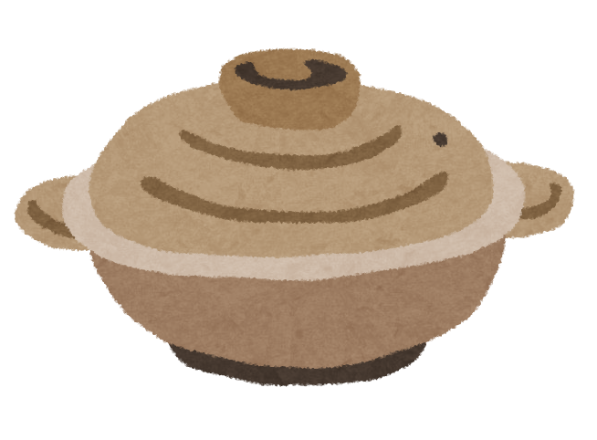
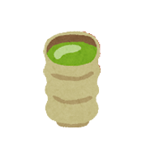
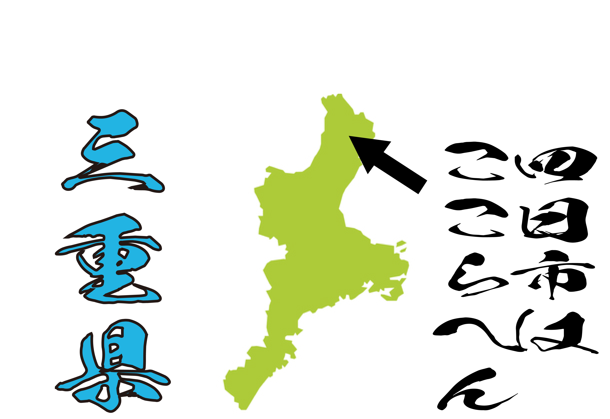
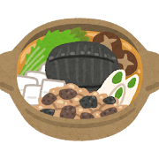

よっかいちばんこやき
四日市萬古焼



四日市萬古焼とは？
・急須や土鍋などの食器類を多く作っている
・1736年から40年の間に沼波弄山によって誕生した
・その後1870年頃に量産方法が確立され、三重県の四日市で生産され始め、日本中に輸出されていった
→これが四日市萬古焼の始まり！
・現在は四日市に加えて菰野（こもの）町というところでも生産されています
四日市萬古焼の良いところ！
- 土鍋はガスではびくともしない程の耐久性があり割れにくい！
- 保温性がとても高いので寒い冬でも食べ物、飲み物が冷めにくい！

実は…
四日市萬古焼実は…
あの俺が好きなポケ◯ンのミジュ◯ルとコラボした商品も発売しているんです！！
四日市萬古焼以外にもタオルやクッキーなどのコラボ商品もあります！
詳しくは↓↓
三重県にはミジュ◯ルとコラボしたマンホールがあったり、ミジュ◯ルがラッピングされた電車やバスも走っているのでみんなも三重県に行ってみよう！
このサイトを見て一人でも四日市萬古焼に興味を持った人や、三重県に行ってみたいとなった人がいると嬉しいです!